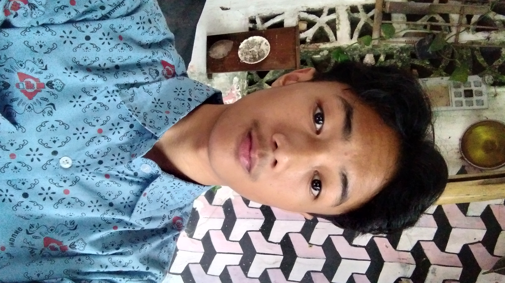

Tentang Saya

Siapa saya?
Saya adalah Zildan Nur Zaman, siswa kelas XI di SMKN 13 Bandung, jurusan Teknik Jaringan Komputer dan Telekomunikasi (TJKT).
Saya tertarik pada dunia jaringan komputer sejak pertama kali belajar bagaimana sebuah paket data bisa berpindah dari satu perangkat ke perangkat lain di seluruh dunia. Dari situ, saya mulai mendalami konfigurasi jaringan, Subnetting IP Address, hingga administrasi server Linux.
Saat ini saya masih dalam tahap belajar dan terus meningkatkan pemahaman di bidang jaringan komputer, baik dari materi sekolah maupun latihan mandiri.
11+
Proyek selesai
1
Sertifikasi
2th
Belajar networking